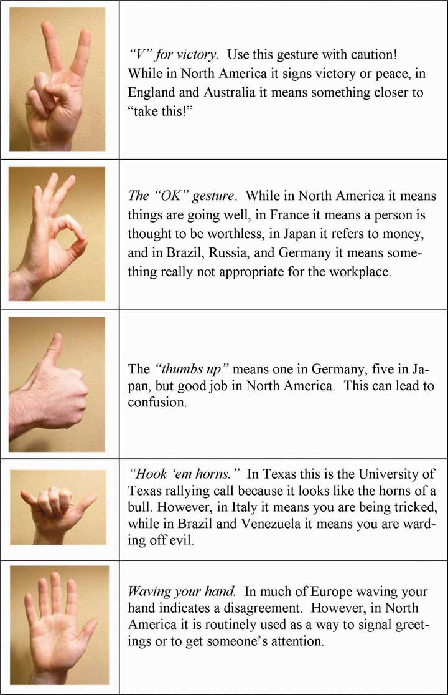

After reading this chapter, you should be able to do the following:
No one likes to receive bad news, and few like to give it. In what is heralded as one of the biggest human resources blunders of 2006, one company found a way around the discomfort of firing someone face-to-face. A total of 400 employees at the Fort Worth, Texas, headquarters of RadioShack Corporation (NYSE: RSH) got the ultimate e-mail message early one Tuesday morning. The message simply said, “The work force reduction notification is currently in progress. Unfortunately, your position is one that has been eliminated.” Company officials argued that using electronic notification was faster and allowed more privacy than breaking the news in person, and additionally, those employees who were laid off received generous severance packages. Organizational consultant Ken Siegel disagrees, proclaiming, “The bottom line is this: To almost everyone who observes or reads this, it represents a stupefying new low in the annals of management practice.” It’s unclear what, if any, the long-term effect will be for RadioShack. It isn’t just RadioShack that finds it challenging to deal with letting employees go. Terminating employees can be a painful job for many managers. The communication that takes place requires careful preparation and substantial levels of skill. BusinessWeek ethics columnist Bruce Weinstein suggests that anyone who is involved with communicating with downsized employees has an ethical responsibility to do it correctly, which includes doing it in person, doing it privately, giving the person your full attention, being honest but sensitive, and not rushing the person. Some organizations outsource the job of letting someone go to “terminators” who handle this difficult task for them. In fact, Up in the Air, the 2009 movie starring George Clooney that was nominated for six Oscars, chronicles changes at a workforce reduction firm and highlights many of these issues.
Downsizing has been referred to using many euphemisms (language that softens the sound of the word) for termination. Here are just a few ways to say you’re about to lose your job without saying you’ve been fired:
Regardless of how it’s done or what it’s called, is downsizing effective for organizations? Jeffrey Pfeffer, a faculty member at Stanford and best-selling author, argues no:
“Contrary to popular belief, companies that announce layoffs do not enjoy higher stock prices than peers—either immediately or over time. A study of 141 layoff announcements between 1979 and 1997 found negative stock returns to companies announcing layoffs, with larger and permanent layoffs leading to greater negative effects. An examination of 1,445 downsizing announcements between 1990 and 1998 also reported that downsizing had a negative effect on stock-market returns, and the negative effects were larger the greater the extent of the downsizing. Yet another study comparing 300 layoff announcements in the United States and 73 in Japan found that in both countries, there were negative abnormal shareholder returns following the announcement.”
He further notes that evidence doesn’t support the idea that layoffs increase individual company productivity either: “A study of productivity changes between 1977 and 1987 in more than 140,000 U.S. companies using Census of Manufacturers data found that companies that enjoyed the greatest increases in productivity were just as likely to have added workers as they were to have downsized.”
Case written by [citation redacted per publisher request]. Based on information from Joyce, A. (2006, September 10). Fired via e-mail, and other tales of poor exits. Washington Post, p. F1. Retrieved July 1, 2008, from http://www.washingtonpost.com/wp-dyn/content/article/2006/09/09/AR2006090900103.html; Hollon, J. (2006, September 11). You’ve been deleted: Firing by e-mail. Workforce Management, p. 42; Pfeffer, J. (2010, February 5). The case against layoffs. Newsweek. Retrieved April 5, 2010, from http://www.newsweek.com/id/233131; Weinstein, B. (2008, September 12). Downsizing 101: Charged with giving the bad news? Here are your ethical responsibilities. BusinessWeek. Retrieved April 5, 2010, from http://www.businessweek.com/managing/content/sep2008/ca20080912_135498.htm?campaign_id=rss_null.
CommunicationThe process by which information is exchanged between individuals through a common system of symbols, signs, or behavior. is vital to organizations—it’s how we coordinate actions and achieve goals. It is defined in Webster’s dictionary as a process by which information is exchanged between individuals through a common system of symbols, signs, or behavior. We know that 50% to 90% of a manager’s time is spent communicating,Schnake, M. E., Dumler, M. P., Cochran, D. S., & Barnett, T. R. (1990). Effects of differences in subordinate perceptions of superiors’ communication practices. Journal of Business Communication, 27, 37–50. and communication ability is related to a manager’s performance.Penley, L. E., Alexander, E. R., Jernigan, I. E., & Henwood, C. I. (1991). Communication abilities of managers: The relationship of performance. Journal of Management, 17, 57–76. In most work environments, a miscommunication is an annoyance—it can interrupt workflow by causing delays and interpersonal strife. But, in some work arenas, like operating rooms and airplane cockpits, communication can be a matter of life and death.
So, just how prevalent is miscommunication in the workplace? You may not be surprised to learn that the relationship between miscommunication and negative outcomes is very strong. Data suggest that deficient interpersonal communication was a causal factor in approximately 70% to 80% of all accidents over the last 20 years.NASA study cited by Baron, R. (n.d.). Barriers to effective communication: Implications for the cockpit. Retrieved July 3, 2008, from AirlineSafety.com: http://www.airlinesafety.com/editorials/BarriersToCommunication.htm.
Figure 8.2

At NASA, success depends on strong communication.
Poor communication can also lead to lawsuits. For example, you might think that malpractice suits are filed against doctors based on the outcome of their treatments alone. But a 1997 study of malpractice suits found that a primary influence on whether or not a doctor is sued is the doctor’s communication style. While the combination of a bad outcome and patient unhappiness can quickly lead to litigation, a warm, personal communication style leads to greater patient satisfaction. Simply put, satisfied patients are less likely to sue.Communications skills cut malpractice risk—study reveals most important reason that patients decide to file malpractice suits is because of poor communication by physicians and not medical errors. (1997, October). USA Today.
In business, poor communication costs money and wastes time. One study found that 14% of each workweek is wasted on poor communication.Armour, S. (1998, September 30). Failure to communicate costly for companies. USA Today, p. 1A. In contrast, effective communication is an asset for organizations and individuals alike. Effective communication skills, for example, are an asset for job seekers. A recent study of recruiters at 85 business schools ranked communication and interpersonal skills as the highest skills they were looking for, with 89% of the recruiters saying they were important.Alsop, R. (2006, September 20). The top business schools: Recruiters’ M.B.A. picks. Wall Street Journal Online. Retrieved September 20, 2006, from http://online.wsj.com/article/SB115860376846766495.html?mod=2_1245_1. On the flip side, good communication can help a company retain its star employees. Surveys find that when employees think their organizations do a good job of keeping them informed about matters that affect them and when they have access to the information they need to do their jobs, they are more satisfied with their employers.What are the bottom line results of communicating? (2003, June). Pay for Performance Report. Retrieved July 1, 2008, from http://www.mercerHR.com. So can good communication increase a company’s market value? The answer seems to be yes. “When you foster ongoing communications internally, you will have more satisfied employees who will be better equipped to effectively communicate with your customers,” says Susan Meisinger, president and CEO of the Society for Human Resource Management. Research finds that organizations that are able to improve their communication integrity also increase their market value by as much as 7%.Meisinger, S. (2003, February). Enhancing communications—Ours and yours. HR Magazine. Retrieved July 1, 2008, from http://www.shrm.org/hrmagazine/archive/0203toc.asp. We will explore the definition and benefits of effective communication in our next section.
Communication fulfills three main functions within an organization, including coordination, transmission of information, and sharing emotions and feelings. All these functions are vital to a successful organization. The coordination of effort within an organization helps people work toward the same goals. Transmitting information is a vital part of this process. Sharing emotions and feelings bonds teams and unites people in times of celebration and crisis. Effective communication helps people grasp issues, build rapport with coworkers, and achieve consensus. So, how can we communicate effectively? The first step is to understand the communication process.
Figure 8.3

Lee Iacocca, past president and CEO of Chrysler until his retirement in 1992, said, “You can have brilliant ideas, but if you can’t get them across, your ideas won’t get you anywhere.”
We all exchange information with others countless times each day by phone, e-mail, printed word, and of course, in person. Let us take a moment to see how a typical communication works using this as a guide.
Figure 8.4 Process Model of Communication

A senderThe person initiating a communication., such as a boss, coworker, or customer, originates the message with a thought. For example, the boss’s thought could be: “Get more printer toner cartridges!”
The sender encodesThe translation of ideas into words. the message, translating the idea into words.
The boss may communicate this thought by saying, “Hey you guys, let’s order more printer toner cartridges.”
The mediumThe way that a sender’s message is conveyed. of this encoded message may be spoken words, written words, or signs.
The receiverThe person who a message is intended to reach. is the person who receives the message.
The receiver decodesThe process of assigning meaning to a received message. the message by assigning meaning to the words.
In this example, our receiver, Bill, has a to-do list a mile long. “The boss must know how much work I already have,” the receiver thinks. Bill’s mind translates his boss’s message as, “Could you order some printer toner cartridges, in addition to everything else I asked you to do this week…if you can find the time?”
The meaning that the receiver assigns may not be the meaning that the sender intended, because of factors such as noise. NoiseAnything that interferes with or distorts the message being transformed. is anything that interferes with or distorts the message being transformed. Noise can be external in the environment (such as distractions) or it can be within the receiver. For example, the receiver may be extremely nervous and unable to pay attention to the message. Noise can even occur within the sender: The sender may be unwilling to take the time to convey an accurate message, or the words that are chosen can be ambiguous and prone to misinterpretation.
Picture the next scene. The place: a staff meeting. The time: a few days later. Bill’s boss believes the message about printer toner has been received.
“Are the printer toner cartridges here yet?” Bill’s boss asks.
“You never said it was a rush job!” Bill protests.
“But!”
“But!”
Miscommunications like these happen in the workplace every day. We’ve seen that miscommunication does occur in the workplace, but how does a miscommunication happen? It helps to think of the communication process. The series of arrows pointing the way from the sender to the receiver and back again can, and often do, fall short of their target.
Communication is vital to organizations. Poor communication is prevalent between senders and receivers. Communication fulfills three functions within organizations, including coordination, the transmission of information, and sharing emotions and feelings. Noise can disrupt or distort communication.
The biggest single problem in communication is the illusion that it has taken place.
George Bernard Shaw
FilteringThe distortion or withholding of information to manage a person’s reactions. is the distortion or withholding of information to manage a person’s reactions. Some examples of filtering include a manager’s keeping a division’s negative sales figures from a superior, in this case, the vice president. The old saying, “Don’t shoot the messenger!” illustrates the tendency of receivers to vent their negative response to unwanted messages to the sender. A gatekeeper (the vice president’s assistant, perhaps) who doesn’t pass along a complete message is also filtering. Additionally, the vice president may delete the e-mail announcing the quarter’s sales figures before reading it, blocking the message before it arrives.
As you can see, filtering prevents members of an organization from getting the complete picture of a situation. To maximize your chances of sending and receiving effective communications, it’s helpful to deliver a message in multiple ways and to seek information from multiple sources. In this way, the impact of any one person’s filtering will be diminished.
Since people tend to filter bad news more during upward communication, it is also helpful to remember that those below you in an organization may be wary of sharing bad news. One way to defuse this tendency to filter is to reward employees who clearly convey information upward, regardless of whether the news is good or bad.
Here are some of the criteria that individuals may use when deciding whether to filter a message or pass it on:
Once again, filtering can lead to miscommunications in business. Listeners translate messages into their own words, each creating a unique version of what was said.Alessandra, T. (1993). Communicating at work. New York: Fireside.
Small things can command our attention when we’re visiting a new place—a new city or a new company. Over time, however, we begin to make assumptions about the environment based on our past experiences. Selective perceptionThe personal filtering of what we see and hear to suit our own needs. refers to filtering what we see and hear to suit our own needs. This process is often unconscious. We are bombarded with too much stimuli every day to pay equal attention to everything, so we pick and choose according to our own needs. Selective perception is a time-saver, a necessary tool in a complex culture. But it can also lead to mistakes.
Think back to the example conversation between the person asked to order more toner cartridges and his boss earlier in this chapter. Since Bill found the to-do list from his boss to be unreasonably demanding, he assumed the request could wait. (How else could he do everything else on the list?) The boss, assuming that Bill had heard the urgency in her request, assumed that Bill would place the order before returning to previously stated tasks. Both members of this organization were using selective perception to evaluate the communication. Bill’s perception was that the task could wait. The boss’s perception was that a time frame was clear, though unstated. When two selective perceptions collide, a misunderstanding occurs.
Messages reach us in countless ways every day. Some messages are societal—advertisements that we may hear or see in the course of our day. Others are professional—e-mails, memos, and voice mails, as well as conversations with our colleagues. Others are personal—messages from and conversations with our loved ones and friends.
Add these together and it’s easy to see how we may be receiving more information than we can take in. This state of imbalance is known as information overloadWhat occurs when the information processing demands on an individual’s time to perform interactions and internal calculations exceed the supply or capacity of time available for such processing., which occurs “when the information processing demands on an individual’s time to perform interactions and internal calculations exceed the supply or capacity of time available for such processing.”Schick, A. G., Gordon, L. A., & Haka, S. (1990). Information overload: A temporal approach. Accounting, Organizations, and Society, 15, 199–220. Others note that information overload is “a symptom of the high-tech age, which is too much information for one human being to absorb in an expanding world of people and technology. It comes from all sources including TV, newspapers, and magazines as well as wanted and unwanted regular mail, e-mail and faxes. It has been exacerbated enormously because of the formidable number of results obtained from Web search engines.”Retrieved July 1, 2008, from PC Magazine encyclopedia Web site: http://www.pcmag.com/encyclopedia_term/0,2542,t=information+overload &i=44950,00.asp and reinforced by information in Dawley, D. D., & Anthony, W. P. (2003). User perceptions of e-mail at work. Journal of Business and Technical Communication, 17, 170–200. Other research shows that working in such fragmented fashion significantly impacts efficiency, creativity, and mental acuity.Based on Overholt, A. (2001, February). Intel’s got (too much) mail. Fast Company. Retrieved July 2, 2008, from http://www.fastcompany.com/online/44/intel.html and http://blogs.intel.com/it/2006/10/information_overload.php.
Going back to our example of Bill, let’s say he’s in his office on the phone with a supplier. While he’s talking, he hears the chime of his e-mail alerting him to an important message from his boss. He’s scanning through it quickly while still on the phone when a coworker pokes her head into his office saying Bill’s late for a staff meeting. The supplier on the other end of the phone line has just given him a choice among the products and delivery dates he requested. Bill realizes he missed hearing the first two options, but he doesn’t have time to ask the supplier to repeat them all or to try reconnecting with him at a later time. He chooses the third option—at least he heard that one, he reasons, and it seemed fair. How good was Bill’s decision amidst all the information he was processing at the same time?
An effective communication requires a sender and a receiver who are open to speaking and listening to one another, despite possible differences in opinion or personality. One or both parties may have to put their emotions aside to achieve the goal of communicating clearly. A receiver who is emotionally upset tends to ignore or distort what the sender is saying. A sender who is emotionally upset may be unable to present ideas or feelings effectively.
Have you ever told a joke that fell flat? You and the receiver lacked the common context that could have made it funny. (Or yes, it could have just been a lousy joke.) Sarcasm and irony are subtle and, therefore, they are potentially hurtful commodities in business. It’s best to keep these types of communications out of the workplace, as their benefits are limited, and their potential dangers are great. Lack of familiarity with the sender can lead to misinterpreting humor, especially in less-rich information channels such as e-mail. For example, an e-mail from Jill that ends with, “Men should be boiled in vats of oil,” could be interpreted as antimale if the receiver didn’t know that Jill has a penchant for exaggeration and always jokes to let off steam. Similarly, if the sender lacks credibility or is untrustworthy, the message will not get through. Receivers may be suspicious of the sender’s motivations (Why is she telling me this?). Likewise, if the sender has communicated erroneous information in the past or has created false emergencies, the current message may be filtered.
The informal gossip network known as the grapevineThe informal gossip network within a given organization. is a lifeline for many employees seeking information about their company.Kurland, N. B., & Pelled, L. H. (2000). Passing the word: Toward a model of gossip and power in the workplace. Academy of Management Review, 25, 428–438. Researchers agree that the grapevine is an inevitable part of organizational life. Research finds that 70% of all organizational communication occurs at the grapevine level.Crampton, S. M. (1998). The informal communication network: Factors influencing grapevine activity. Public Personnel Management. Retrieved July 2, 2008, from http://www.allbusiness.com/management/735210-1.html. Employees trust their peers as a source of information, but the grapevine’s informal structure can be a barrier to effective communication from the managerial point of view. Its grassroots structure gives it greater credibility in the minds of employees than information delivered through official channels, even when that information is false. Some downsides of the office grapevine are that gossip offers politically minded insiders a powerful tool for disseminating communication (and self-promoting miscommunications) within an organization. In addition, the grapevine lacks a specific sender, which can create a sense of distrust among employees: Who is at the root of the gossip network? When the news is volatile, suspicions may arise as to the person or person behind the message. Managers who understand the grapevine’s power can use it to send and receive messages of their own. They can also decrease the grapevine’s power by sending official messages quickly and accurately, should big news arise.
Words can mean different things to different people, or they might not mean anything to another person. This is called semanticsThe meaning of a word or phrase.. For example, companies often have their own acronyms and buzzwords (called business jargonA specific set of acronyms or words unique to a specific group or profession.) that are clear to them but impenetrable to outsiders. For example, at IBM, GBS is focusing on BPTS, using expertise acquired from the PwC purchase (which had to be sold to avoid conflicts of interest in light of SOX) to fend off other BPO providers and inroads by the Bangalore tiger. Does this make sense to you? If not, here’s the translation: IBM’s Global Business Services (GBS) division is focusing on offering companies Business Process Transformation Services (BPTS), using the expertise it acquired from purchasing the management consulting and technology services arm of PricewaterhouseCoopers (PwC), which had to sell the division due to the Sarbanes-Oxley Act (SOX; enacted in response to the major accounting scandals such as Enron). The added management expertise puts it above business process outsourcing (BPO) vendors who focus more on automating processes rather than transforming and improving them. Chief among these BPO competitors is Wipro, often called the “Bangalore tiger” because of its geographic origin and aggressive growth. Given the amount of messages we send and receive everyday, it makes sense that humans would try to find a shortcut—a way to communicate things in code. In business, this code is known as jargon. Jargon is the language of specialized terms used by a group or profession. It is common shorthand among experts and if used sensibly can be a quick and efficient way of communicating. Most jargon consists of unfamiliar terms, abstract words, nonexistent words, acronyms, and abbreviations, with an occasional euphemism thrown in for good measure. Every profession, trade, and organization has its own specialized terms.Wright, N. (n.d.). Keep it jargon-free. Retrieved July 2, 2008, from the Plain Language Action and Information Network Web site: http://www.plainlanguage.gov/howto/wordsuggestions/jargonfree.cfm.
At first glance, jargon sounds like a good thing—a quicker way to send an effective communication similar to the way text message abbreviations can send common messages in a shorter, yet understandable way. But that’s not always how things happen. Jargon can be an obstacle to effective communication, causing listeners to tune out or fostering ill feelings between partners in a conversation. When jargon rules the day, the message can get obscured. A key question to ask yourself before using a phrase of jargon is, “Who is the receiver of my message?” If you are a specialist speaking to another specialist in your area, jargon may be the best way to send a message while forging a professional bond—similar to the way best friends can communicate in code. For example, an IT technician communicating with another IT technician may use jargon as a way of sharing information in a way that reinforces the pair’s shared knowledge. But that same conversation should be held in Standard English, free of jargon, when communicating with staff members outside the IT group.
Eighty buzz words in the business can be found at the following Web site:
http://www.amanet.org/movingahead/editorial2002_2003/nov03_80buzzwords.htm
A discussion of why slang is a problem can be found at the following Web site:
http://sbinfocanada.about.com/od/speakforsuccesscourse/a/speechlesson5.htm
In addition, the OB Toolbox below will help you avoid letting business jargon get in your way at work.
Source: Adapted from ideas in Adubato, S. (2005, March 13). Scrap the jargon…Now! Retrieved July 1, 2008, from The Star-Ledger Web site: http://www.stand-deliver.com/star_ledger/050313.asp.
Men and women work together every day, but their different styles of communication can sometimes work against them. Generally speaking, women like to ask questions before starting a project, while men tend to “jump right in.” A male manager who’s unaware of how most women communicate their readiness to work may misperceive a ready employee as not being prepared.
Another difference that has been noticed is that men often speak in sports metaphors, while many women use their home as a starting place for analogies. Women who believe men are “only talking about the game” may be missing out on a chance to participate in a division’s strategy and opportunities for teamwork and “rallying the troops” for success.Krotz, J. L. (n.d.). 6 tips for bridging the communication gap. Retrieved from the Microsoft Small Business Center Web site: http://www.microsoft.com/smallbusiness/resources/management/leadership-training/women-vs-men-6-tips- for-bridging-the-communication-gap.aspx.
“It is important to promote the best possible communication between men and women in the workplace,” notes gender policy advisor Dee Norton, who provided the above example. “As we move between the male and female cultures, we sometimes have to change how we behave (speak the language of the other gender) to gain the best results from the situation. Clearly, successful organizations of the future are going to have leaders and team members who understand, respect, and apply the rules of gender culture appropriately.”CDR Dee Norton. (n.d.). Gender and communication—finding common ground. Retrieved July 2, 2008, from http://www.uscg.mil/leadership/gender.htm.
As we have seen, differences in men’s and women’s communication styles can lead to misunderstandings in the workplace. Being aware of these differences, however, can be the first step in learning to work with them instead of around them. Keep in mind that men tend to focus more on competition, data, and orders in their communications, while women tend to focus more on cooperation, intuition, and requests. Both styles can be effective in the right situations, but understanding the differences is a first step in avoiding misunderstandings.
“Mean what you say, and say what you mean.” It’s an easy thing to say. But in business, what do those words mean? Simply put, different words mean different things to different people. Age, education, and cultural background are all factors that influence how a person interprets words. The less we consider our audience, the greater our chances of miscommunication will be. Eliminating jargon is one way of ensuring our words will convey real-world concepts to others. Speaking to our audience, as opposed to speaking about ourselves, is another.
Managers who speak about “long-term goals and profits” to a staff that has received scant raises may find their core message (“You’re doing a great job—and that benefits the folks in charge!”) has infuriated the group they hoped to inspire. Instead, managers who recognize the contributions of their staff and confirm that this work is contributing to company goals in ways “that will benefit the source of our success—our employees as well as executives,” will find that their core message (“You’re doing a great job—we really value your work.”) is received as intended, rather than being misinterpreted.
Words and actions that stereotype others on the basis of personal or group affiliation are examples of bias. Below is a list of words that have the potential to be offensive. The column on the right provides alternative words that can be used instead.Adapted from information in Ashcraft, K., & Mumby, D. K. (2003). Reworking gender. Thousand Oaks, CA: Sage; Miller, C., & Swift, K. (1980). The handbook of nonsexist writing. New York: Lippincott & Crowell; Procter, M. (2007, September 11). Unbiased language. (n.d.). Retrieved July 2, 2008, from http://www.utoronto.ca/writing/unbias.html.
Figure 8.6

Effective communication is clear, factual, and goal-oriented. It is also respectful. Referring to a person by one adjective (a brain, a diabetic) reduces the person to that one characteristic. Language that inflames or stereotypes a person poisons the communication process. Language that insults an individual or group based on age, ethnicity, sexual preference, or political beliefs violates public and private standards of decency, ranging from civil rights to corporate regulations.
The effort to create a neutral set of terms to refer to heritage and preferences has resulted in a debate over the nature of “political correctness.” Proponents of political correctness see it as a way to defuse the volatile nature of words that stereotyped groups and individuals in the past. Critics of political correctness see its vocabulary as stilted and needlessly cautious.
Many companies offer new employees written guides on standards of speech and conduct. These guides, augmented by common sense and courtesy, are solid starting points for effective, respectful workplace communication.
Tips for appropriate workplace speech include, but are not limited to the following:
The greatest compliment that was ever paid to me was when one asked me what I thought, and attended to my answer.
Henry David Thoreau
A sender may strive to deliver a message clearly. But the receiver’s ability to listen effectively is equally vital to successful communication. The average worker spends 55% of their workdays listening. Managers listen up to 70% each day. Unfortunately, listening doesn’t lead to understanding in every case.
From a number of different perspectives, listening matters. Former Chrysler CEO Lee Iacocca lamented, “I only wish I could find an institute that teaches people how to listen. After all, a good manager needs to listen at least as much as he needs to talk.”Iacocca, L., & Novak, W. (1984). Iacocca: An autobiography. New York: Bantam Press. Research shows that listening skills were related to promotions.Sypher, B. D., Bostrom, R. N., & Seibert, J. H. (1989). Listening, communication abilities, and success at work. Journal of Business Communication, 26, 293–303.
Listening clearly matters. Listening takes practice, skill, and concentration. Alan Gulick, a Starbucks Corporation spokesperson, believes better listening can improve profits. If every Starbucks employee misheard one $10 order each day, their errors would cost the company a billion dollars annually. To teach its employees to listen, Starbucks created a code that helps employees taking orders hear the size, flavor, and use of milk or decaffeinated coffee. The person making the drink echoes the order aloud.
Cicero said, “Silence is one of the great arts of conversation.” How often have we been in a conversation with someone else when we are not really listening but itching to convey our portion? This behavior is known as “rehearsing.” It suggests the receiver has no intention of considering the sender’s message and is actually preparing to respond to an earlier point instead. Effective communication relies on another kind of listening: active listening.
Active listening can be defined as giving full attention to what other people are saying, taking time to understand the points being made, asking questions as needed, and not interrupting at inappropriate times.O*NET Resource Center, the nation’s primary source of occupational information accessed at http://online.onetcenter.org/skills/. Active listening creates a real-time relationship between the sender and receiver by acknowledging the content and receipt of a message. As we’ve seen in the Starbucks example above, repeating and confirming a message’s content offers a way to confirm that the correct content is flowing between colleagues. The process creates a bond between coworkers while increasing the flow and accuracy of messaging.
Carl Rogers gave five rules for active listening:
The good news is that listening is a skill that can be learned.Brownell, J. (1990). Perceptions of effective listeners: A management study. Journal of Business Communications, 27, 401–415. The first step is to decide that we want to listen. Casting aside distractions, such as by reducing background or internal noise, is critical. The receiver takes in the sender’s message silently, without speaking.
Second, throughout the conversation, show the speaker that you’re listening. You can do this nonverbally by nodding your head and keeping your attention focused on the speaker. You can also do it verbally, by saying things like, “Yes,” “That’s interesting,” or other such verbal cues. As you’re listening, pay attention to the sender’s body language for additional cues about how they’re feeling. Interestingly, silence has a role in active listening. During active listening, we are trying to understand what has been said, and in silence we can consider the implications. We can’t consider information and object to it at the same time. That’s where the power of silence comes into play. Finally, if anything is not clear to you, ask questions. Confirm that you’ve heard the message accurately, by repeating back a crucial piece like, “Great, I’ll see you at 2:00 p.m. in my office.” At the end of the conversation, a thank you from both parties is an optional but highly effective way of acknowledging each other’s teamwork.
As we’ve seen above, active listening creates a more dynamic relationship between a receiver and a sender. It strengthens personal investment in the information being shared. It also forges healthy working relationships among colleagues by making speakers and listeners equally valued members of the communication process.
Many companies offer public speaking courses for their staff, but what about “public listening”? Here are some more ways you can build your listening skills by becoming a more effective listener and banishing communication freezers from your discussions.
Sources: Adapted from information in Barrett, D. J. (2006). Leadership communication. New York: McGraw-Hill/Irwin; Improving verbal skills. (1997). Retrieved July 1, 2008, from the Institute for Management Web site: http://www.itstime.com/aug97.htm; Ten tips: Active listening. (2007, June 4). Retrieved July 1, 2008, from the Communication at Work Web site: http://communication.atwork-network.com/2007/06/04/ten-tips-active-listening/.
Communication freezers put an end to effective communication by making the receiver feel judged or defensive. Typical communication stoppers include criticizing, blaming, ordering, judging, or shaming the other person. Some examples of things to avoid saying include the following:
Telling the other person what to do:
Threatening with “or else” implied:
Making suggestions or telling the other person what they ought to do:
Attempting to educate the other person:
Judging the other person negatively:
Giving insincere praise:
Psychoanalyzing the other person:
Making light of the other person’s problems by generalizing:
Asking excessive or inappropriate questions:
Making light of the problem by kidding:
Sources: Adapted from information in Tramel, M., & Reynolds, H. (1981). Executive leadership. Englewood Cliffs, NJ: Prentice Hall; Saltman, D., & O’Dea, N. Conflict management workshop PowerPoint presentation. Retrieved July 1, 2008, from http://www.nswrdn.com.au/client_images/6806.PDF; Communication stoppers. Retrieved July 1, 2008, from Mental Health Today Web site: http://www.mental-health-today.com/Healing/communicationstop.htm.
Many barriers to effective communication exist. Examples include filtering, selective perception, information overload, emotional disconnects, lack of source credibility, workplace gossip, gender differences, and semantics. The receiver can enhance the probability of effective communication by engaging in active listening.
There are three types of communication, including: verbal communication involving listening to a person to understand the meaning of a message, written communication in which a message is read, and nonverbal communication involving observing a person and inferring meaning. Let’s start with verbal communication, which is the most common form of communication.
Verbal communications in business take place over the phone or in person. The medium of the message is oral. Let’s return to our printer cartridge example. This time, the message is being conveyed from the sender (the manager) to the receiver (an employee named Bill) by telephone. We’ve already seen how the manager’s request to Bill (“Buy more printer toner cartridges!”) can go awry. Now let’s look at how the same message can travel successfully from sender to receiver.
Manager (speaking on the phone): “Good morning Bill!”
(By using the employee’s name, the manager is establishing a clear, personal link to the receiver.)
Manager: “Your division’s numbers are looking great.”
(The manager’s recognition of Bill’s role in a winning team further personalizes and emotionalizes the conversation.)
Manager: “Our next step is to order more printer toner cartridges. Would you place an order for 1,000 printer toner cartridges with Jones Computer Supplies? Our budget for this purchase is $30,000, and the printer toner cartridges need to be here by Wednesday afternoon.”
(The manager breaks down the task into several steps. Each step consists of a specific task, time frame, quantity, or goal.)
Bill: “Sure thing! I’ll call Jones Computer Supplies and order 1,000 more printer toner cartridges, not exceeding a total of $30,000, to be here by Wednesday afternoon.”
(Bill, a model employee, repeats what he has heard. This is the feedback portion of the communication. Feedback helps him recognize any confusion he may have had hearing the manager’s message. Feedback also helps the manager hear if she has communicated the message correctly.)
StorytellingA narrative account of an event or events. has been shown to be an effective form of verbal communication that serves an important organizational function by helping to construct common meanings for individuals within the organization. Stories can help clarify key values and also help demonstrate how certain tasks are performed within an organization. Story frequency, strength, and tone are related to higher organizational commitment.McCarthy, J. F. (2008). Short stories at work: Storytelling as an indicator of organizational commitment. Group & Organization Management, 33, 163–193. The quality of the stories is related to the ability of entrepreneurs to secure capital for their firms.Martens, M. L., Jennings, J. E., & Devereaux, J. P. (2007). Do the stories they tell get them the money they need? The role of entrepreneurial narratives in resource acquisition. Academy of Management Journal, 50, 1107–1132.
While the process may be the same, high stakes communications require more planning, reflection, and skill than normal day-to-day interactions at work. Examples of high stakes communication events include asking for a raise or presenting a business plan to a venture capitalist. In addition to these events, there are also many times in our professional lives when we have crucial conversationsDiscussions in which the stakes are high, opinions vary, and emotions run strong., which are defined as discussions in which not only are the stakes high, but also the opinions vary and emotions run strong.Patterson, K., Grenny, J., McMillan, R., & Switzler, A. (2002). Crucial conversations: Tools for talking when stakes are high. New York: McGraw-Hill. One of the most consistent recommendations from communications experts is to work toward using “and” instead of “but” when communicating under these circumstances. In addition, be aware of your communication style and practice being flexible; it is under stressful situations that communication styles can become the most rigid.
Source: Adapted from information contained in Gabor, D. (1983). How to start a conversation and make friends. New York: Legacy; Post, E. (2005). Emily Post’s etiquette advantage in business. New York: Collins Living; Fine, D. (2005). The fine art of small talk. New York: Hyperion.
In contrast to verbal communications, which are oral, written business communications are printed messages. Examples of written communications include memos, proposals, e-mails, letters, training manuals, and operating policies. They may be printed on paper or appear on the screen. Written communication is often asynchronous. That is, the sender can write a message that the receiver can read at any time, unlike a conversation that is carried on in real time. A written communication can also be read by many people (such as all employees in a department or all customers). It’s a “one-to-many” communication, as opposed to a one-to-one conversation. There are exceptions, of course: A voice mail is an oral message that is asynchronous. Conference calls and speeches are oral one-to-many communications, and e-mails can have only one recipient or many.
Normally, a verbal communication takes place in real time. Written communication, by contrast, can be constructed over a longer period of time. It also can be collaborative. Multiple people can contribute to the content on one document before that document is sent to the intended audience.
Verbal and written communications have different strengths and weaknesses. In business, the decision to communicate verbally or in written form can be a powerful one. As we’ll see below, each style of communication has particular strengths and pitfalls. When determining whether to communicate verbally or in writing, ask yourself: Do I want to convey facts or feelings? Verbal communications are a better way to convey feelings. Written communications do a better job of conveying facts.
Picture a manager making a speech to a team of 20 employees. The manager is speaking at a normal pace. The employees appear interested. But how much information is being transmitted? Probably not as much as the speaker believes. The fact is that humans listen much faster than they speak. The average public speaker communicates at a speed of about 125 words a minute, and that pace sounds fine to the audience. (In fact, anything faster than that probably would sound unusual. To put that figure in perspective, someone having an excited conversation speaks at about 150 words a minute.) Based on these numbers, we could assume that the audience has more than enough time to take in each word the speaker delivers, which actually creates a problem. The average person in the audience can hear 400 to 500 words a minute.Lee, D., & Hatesohl, D. Listening: Our most used communication skill. Retrieved July 2, 2008, from the University of Missouri Web site: http://extension.missouri.edu/explore/comm/cm0150.htm. The audience has more than enough time to hear. As a result, their minds may wander.
As you can see, oral communication is the most often used form of communication, but it is also an inherently flawed medium for conveying specific facts. Listeners’ minds wander. It’s nothing personal—in fact, it’s a completely normal psychological occurrence. In business, once we understand this fact, we can make more intelligent communication choices based on the kind of information we want to convey.
Figure 8.7

Communication mediums have come a long way since Alexander Graham Bell’s original telephone.
Most jobs involve some degree of writing. According to the National Commission on Writing, 67% of salaried employees in large American companies and professional state employees have some kind of writing responsibility. Half of responding companies reported that they take writing into consideration when hiring professional employees, and 91% always take writing into account when hiring.Flink, H. (2007, March). Tell it like it is: Essential communication skills for engineers. Industrial Engineer, 39, 44–49. Luckily, it is possible to learn to write clearly.
Here are some tips on writing well. Thomas Jefferson summed up the rules of writing well with this idea: “Don’t use two words when one will do.” Put another way, half the words can have twice the impact. One of the oldest myths in business is that writing more will make us sound more important. The opposite is true. Leaders who can communicate simply and clearly project a stronger image than those who write a lot but say nothing.
Remember, concise writing equals effective communication.
What you say is a vital part of any communication. Surprisingly, what you don’t say can be even more important. Research shows that nonverbal cues can also affect whether or not you get a job offer. Judges examining videotapes of actual applicants were able to assess the social skills of job candidates with the sound turned off. They watched the rate of gesturing, time spent talking, and formality of dress to determine which candidates would be the most socially successful on the job.Gifford, R., Ng, C. F., & Wilkinson, M. (1985). Nonverbal cues in the employment interview: Links between applicant qualities and interviewer judgments. Journal of Applied Psychology, 70, 729–736. Research also shows that 55% of in-person communication comes from nonverbal cues such as facial expressions, body stance, and tone of voice. According to one study, only 7% of a receiver’s comprehension of a message is based on the sender’s actual words, 38% is based on paralanguage (the tone, pace, and volume of speech), and 55% is based on nonverbal cues (body language).Mehrabian, A. (1981). Silent messages. New York: Wadsworth. To be effective communicators, our body language, appearance, and tone must align with the words we’re trying to convey. Research shows that when individuals are lying, they are more likely to blink more frequently, shift their weight, and shrug.Siegman, A. W. (1985). Multichannel integrations of nonverbal behavior. Hillsdale, NJ: L. Erlbaum Associates.
To learn more about facial language from facial recognition expert Patrician McCarthy as she speaks with Senior Editor Suzanne Woolley at Business Week, view the online interview at http://feedroom.businessweek.com/index.jsp?fr_chl=1e2ee1e43e4a5402a862f79a7941fa625f5b0744
A different tone can change the perceived meaning of a message. See the table below for how clearly this can be true. If we only read these words, we would be left to wonder, but during a conversation, the tone conveys a great deal of information.
Changing your tone can dramatically change your meaning.
Table 8.1
| Placement of the emphasis | What it means |
|---|---|
| I did not tell John you were late. | Someone else told John you were late. |
| I did not tell John you were late. | This did not happen. |
| I did not tell John you were late. | I may have implied it. |
| I did not tell John you were late. | But maybe I told Sharon and José. |
| I did not tell John you were late. | I was talking about someone else. |
| I did not tell John you were late. | I told him you still are late. |
| I did not tell John you were late. | I told him you were attending another meeting. |
Source: Based on ideas in Kiely, M. (October, 1993). When “no” means “yes.” Marketing, 7–9.
Now you can see how changing the tone of voice in a conversation can incite or diffuse a misunderstanding. For another example, imagine that you’re a customer interested in opening a new bank account. At one bank, the bank officer is dressed neatly. She looks you in the eye when she speaks. Her tone is friendly. Her words are easy to understand, yet professional sounding. “Thank you for considering Bank of the East Coast. We appreciate this opportunity and would love to explore ways that we can work together to help your business grow,” she says with a friendly smile. At the second bank, the bank officer’s tie is stained. He looks over your head and down at his desk as he speaks. He shifts in his seat and fidgets with his hands. His words say, “Thank you for considering Bank of the West Coast. We appreciate this opportunity and would love to explore ways that we can work together to help you business grow,” but he mumbles his words, and his voice conveys no enthusiasm or warmth. Which bank would you choose? The speaker’s body language must match his or her words. If a sender’s words and body language don’t match—if a sender smiles while telling a sad tale, for example—the mismatch between verbal and nonverbal cues can cause a receiver to actively dislike the sender.
Following are a few examples of nonverbal cues that can support or detract from a sender’s message.
A simple rule of thumb is that simplicity, directness, and warmth conveys sincerity. Sincerity is vital for effective communication. In some cultures, a firm handshake, given with a warm, dry hand, is a great way to establish trust. A weak, clammy handshake might convey a lack of trustworthiness. Gnawing one’s lip conveys uncertainty. A direct smile conveys confidence.
In business, the style and duration of eye contact varies greatly across cultures. In the United States, looking someone in the eye (for about a second) is considered a sign of trustworthiness.
The human face can produce thousands of different expressions. These expressions have been decoded by experts as corresponding to hundreds of different emotional states.Ekman, P., Friesen, W. V., & Hager, J. C. The facial action coding system (FACS). Retrieved July 2, 2008, from http://face-and-emotion.com/dataface/facs/manual. Our faces convey basic information to the outside world. Happiness is associated with an upturned mouth and slightly closed eyes; fear with an open mouth and wide-eyed stare. Shifty eyes and pursed lips convey a lack of trustworthiness. The impact of facial expressions in conversation is instantaneous. Our brains may register them as “a feeling” about someone’s character. For this reason, it is important to consider how we appear in business as well as what we say. The muscles of our faces convey our emotions. We can send a silent message without saying a word. A change in facial expression can change our emotional state. Before an interview, for example, if we focus on feeling confident, our face will convey that confidence to an interviewer. Adopting a smile (even if we’re feeling stressed) can reduce the body’s stress levels.
The position of our body relative to a chair or other person is another powerful silent messenger that conveys interest, aloofness, professionalism, or lack thereof. Head up, back straight (but not rigid) implies an upright character. In interview situations, experts advise mirroring an interviewer’s tendency to lean in and settle back in a seat. The subtle repetition of the other person’s posture conveys that we are listening and responding.
The meaning of a simple touch differs between individuals, genders, and cultures. In Mexico, when doing business, men may find themselves being grasped on the arm by another man. To pull away is seen as rude. In Indonesia, to touch anyone on the head or to touch anything with one’s foot is considered highly offensive. In the Far East and some parts of Asia, according to business etiquette writer Nazir Daud, “It is considered impolite for a woman to shake a man’s hand.”Daud, N. (n.d.). Business etiquette. Retrieved July 2, 2008, from http://ezinearticles.com/?Business-Etiquette---Shaking-Hands-around- the-World&id=746227. Americans, as we have noted above, place great value in a firm handshake. But handshaking as a competitive sport (“the bone-crusher”) can come off as needlessly aggressive both at home and abroad.
Anthropologist Edward T. Hall coined the term proxemics to denote the different kinds of distance that occur between people. These distances vary among cultures. The chart below outlines the basic proxemics of everyday life and their associated meaning.Hall, E. T. (1966). The hidden dimension. New York: Doubleday.
Figure 8.9

Distance between speakers is partially determined by their intimacy level.
Source: Hall, E. T. (1966). The hidden dimension. New York: Doubleday.
Standing too far away from a colleague (public speaking distance) or too close to a colleague (intimate distance for embracing) can thwart an effective verbal communication in business.
The channel, or medium, used to communicate a message affects how accurately the message will be received. Channels vary in their “information-richness.” Information-rich channels convey more nonverbal information. Research shows that effective managers tend to use more information-rich communication channels than less effective managers.Allen, D. G., & Griffeth, R. W. (1997). Vertical and lateral information processing; Fulk, J., & Boyd, B. (1991). Emerging theories of communication in organizations. Journal of Management, 17, 407–446; Yates, J., & Orlikowski, W. J. (1992). Genres of organizational communication: A structurational approach to studying communication and media. Academy of Management Review, 17, 299–326. The figure below illustrates the information richness of different channels.
Figure 8.10

Information channels differ in their richness.
Sources: Adapted from information in Daft, R. L., & Lenge, R. H. (1984). Information richness: A new approach to managerial behavior and organizational design. In B. Staw & L. Cummings (Eds.), Research in organizational behavior, vol. 6 (pp. 191–233). Greenwich, CT: JAI Press; Lengel, R. H., & Daft, D. L. (1988). The selection of communication media as an executive skill. Academy of Management Executive, 11, 225–232.
The key to effective communication is to match the communication channel with the goal of the message.Barry, B., & Fulmer, I. S. (2004). The medium and the message: The adaptive use of communication media in dyadic influence. Academy of Management Review, 29, 272–292. For example, written media may be a better choice when the sender wants a record of the content, has less urgency for a response, is physically separated from the receiver, and doesn’t require a lot of feedback from the receiver, or when the message is complicated and may take some time to understand.
Oral communication, on the other hand, makes more sense when the sender is conveying a sensitive or emotional message, needs feedback immediately, and does not need a permanent record of the conversation.
Figure 8.11 Guide for When to Use Written versus Verbal Communication

Like face-to-face and telephone conversations, videoconferencing has high information richness, because receivers and senders can see or hear beyond just the words that are used—they can see the sender’s body language or hear the tone of their voice. Handheld devices, blogs, and written letters and memos offer medium-rich channels, because they convey words and pictures or photos. Formal written documents, such as legal documents and budget spreadsheets, convey the least richness, because the format is often rigid and standardized. As a result, the tone of the message is often lost.
The growth of e-mail has been spectacular, but it has also created challenges in managing information and increasing the speed of doing businesses. Over 100 million adults in the United States use e-mail at least once a day.Taylor, C. (2002, June 10). 12 steps for email addicts. Time.com. Retrieved July 2, 2008, from http://www.time.com/time/magazine/article/0,9171,1002621,00.html. Internet users around the world send an estimated 60 billion e-mails each day, and a large portion of these are spam or scam attempts.60 Billion emails sent daily worldwide. (2006, April 26). Retrieved July 2, 2008, from CNET.UK: http://www.cnet.co.uk/misc/print/0,39030763,49265163,00.htm. That makes e-mail the second most popular medium of communication worldwide, second only to voice. Less than 1% of all written human communications even reaches paper these days.Isom, D. K. (updated October 19, 2005). Electronic discovery: New power, new risks. Retrieved July 2, 2008, from the Utah State Bar Web site: http://utahbar.org/barjournal2000/html/november_2003_2.html. To combat the overuse of e-mail, companies such as Intel have even instituted “no e-mail Fridays.” During these times, all communication is done via other communication channels. Learning to be more effective in your e-mail communications is an important skill. To learn more, check out the OB Toolbox on business e-mail do’s and don’ts.
Sources: Adapted from information in Leland, K., & Bailey, K. (2000). Customer service for dummies. New York: Wiley; Information Technology Services. (1997). Top 10 email dos and top ten email don’ts. Retrieved July 1, 2008, from the University of Illinois at Chicago Medical Center Web site: http://www.uic.edu/hsc/uicmc/its/customers/email-tips.htm; Kawasaki, G. (2006, February 3). The effective emailer. Retrieved July 1, 2008, from How to Change the World Web site: http://blog.guykawasaki.com/2006/02/the_effective_e.html.
An important although often ignored rule when communicating emotional information is that e-mail’s lack of richness can be your loss. As we saw in the chart above, e-mail is a medium-rich channel. It can convey facts quickly. But when it comes to emotion, e-mail’s flaws make it a far less desirable choice than oral communication—the 55% of nonverbal cues that make a conversation comprehensible to a listener are missing. Researchers also note that e-mail readers don’t pick up on sarcasm and other tonal aspects of writing as much as the writer believes they will.Kruger, J. (2005). Egocentrism over email: Can we communicate as well as we think? Journal of Personality and Social Psychology, 89, 925–936.
The sender may believe that certain emotional signifiers have been included in a message. But, with written words alone, those signifiers are not there. This gap between the form and content of e-mail inspired the rise of emoticons—symbols that offer clues to the emotional side of the words in each message. Generally speaking, however, emoticons are not considered professional in business communication.
You might feel uncomfortable conveying an emotionally laden message verbally, especially when the message contains unwanted news. Sending an e-mail to your staff that there will be no bonuses this year may seem easier than breaking the bad news face-to-face, but that doesn’t mean that e-mail is an effective or appropriate way to break this kind of news. When the message is emotional, the sender should use verbal communication. Indeed, a good rule of thumb is that more emotionally laden messages require more thought in the choice of channel and how they are communicated.
Communication can occur without you even realizing it. Consider the following: Is your e-mail name professional? The typical convention for business e-mail contains some form of your name. While an e-mail name like “LazyGirl” or “DeathMonkey” may be fine for chatting online with your friends, they may send the wrong signal to individuals you e-mail such as professors and prospective employers.
Is your outgoing voice mail greeting professional? If not, change it. Faculty and prospective recruiters will draw certain conclusions if, upon calling you, they get a message that screams, “Party, party, party!”
Do you have a “private” social networking Web site on MySpace.com, Facebook.com, or Xanga.com? If so, consider what it says about you to employers or clients. If it is information you wouldn’t share at work, it probably shouldn’t be there.
Googled yourself lately? If not, you probably should. Potential employers have begun searching the Web as part of background checking, and you should be aware of what’s out there about you.
Information can move horizontally, from a sender to a receiver, as we’ve seen. It can also move vertically, down from top management, or up from the front line. Information can also move diagonally between and among levels of an organization, such as a message from a customer service rep to a manager in the manufacturing department or a message from the chief financial officer sent down to all department heads.
Figure 8.13

Organizational communication travels in many different directions.
There is a chance for these arrows to go awry, of course. As Mihaly Csikszentmihalyi, author of best-selling books such as Flow, has noted, “In large organizations the dilution of information as it passes up and down the hierarchy, and horizontally across departments, can undermine the effort to focus on common goals.”Quotation listed on Inspirational Business Quotes. Retrieved July 1, 2008, from http://www.woopidoo.com/business_quotes/effort-quotes.htm.
The organizational status of the sender can impact the receiver’s attentiveness to the message. For example, consider the following: A senior manager sends a memo to a production supervisor. The supervisor, who has a lower status within the organization, is likely to pay close attention to the message. The same information conveyed in the opposite direction, however, might not get the attention it deserves. The message would be filtered by the senior manager’s perception of priorities and urgencies.
Requests are just one kind of communication in business. Other communications, either verbal or written, may seek, give, or exchange information. Research shows that frequent communications with one’s supervisor is related to better job performance ratings and overall organizational performance.Snyder, R. A., & Morris, J. H. (1984). Organizational communication and performance. Journal of Applied Psychology, 69, 461–465; Kacmar, K. M., Witt, L. A., Zivnuska, S., & Gully, S. M. (2003). The interactive effect of leader-member exchange and communication frequency on performance ratings. Journal of Applied Psychology, 88, 764–772. Research also shows that lateral communication done between peers can influence important organizational outcomes such as turnover.Krackhardt, D., & Porter, L. W. (1986). The snowball effect: Turnover embedded in communication networks. Journal of Applied Psychology, 71, 50–55.
Figure 8.14 How Managers Spend Time Communicating at Work

Source: Adapted from information in Luthans, F., & Larsen, J. K. (1986). How managers really communicate. Human Relations, 39, 161–178.
External communications deliver specific businesses messages to individuals outside an organization. They may announce changes in staff or strategy, earnings, and more. The goal of an external communication is to create a specific message that the receiver will understand and share with others. Examples of external communications include the following.
Public relationsProfessionals who create external communications about a client’s product, services, or practices for specific receivers. professionals create external communications about a client’s product, services, or practices for specific receivers. These receivers, it is hoped, will share the message with others. In time, as the message is passed along, it should appear to be independent of the sender, creating the illusion of an independently generated consumer trend, public opinion, and so on.
The message of a public relations effort may be b2b (business to business), b2c (business to consumer), or media related. The message can take different forms. Press releases try to convey a newsworthy message, real or manufactured. It may be constructed like a news item, inviting editors or reporters to reprint the message in part or as a whole, with or without acknowledgement of the sender’s identity. Public relations campaigns create messages over time through contests, special events, trade shows, and media interviews in addition to press releases.
Advertising places external business messages before target receivers through media buys. A media buy is a fee that is paid to a television network, Web site, magazine, and so on by an advertiser to insert an advertisement. The fee is based on the perceived value of the audience who watches, reads, listens to, or frequents the space where the ad will appear.
In recent years, receivers have begun to filter advertiser’s messages. This phenomenon is perceived to be a result of the large amount of ads the average person sees each day and a growing level of consumer wariness of paid messaging. Advertisers, in turn, are trying to create alternative forms of advertising that receivers won’t filter. The advertorial is one example of an external communication that combines the look of an article with the focused message of an ad. Product placements in videos, movies, and games are other ways that advertisers strive to reach receivers with commercial messages.
A Web page’s external communication can combine elements of public relations, advertising, and editorial content, reaching receivers on multiple levels and in multiple ways. Banner ads, blogs, and advertiser-driven “click-through” areas are just a few of the elements that allow a business to deliver a message to a receiver online. The perceived flexibility of online communications can impart a less formal (and therefore, more believable) quality to an external communication. A message relayed in a daily blog post, for example, will reach a receiver differently than if it is delivered in an annual report. The popularity and power of blogs is growing, with 11% of Fortune 500 companies having official blogs (up from 4% in 2005). In fact, blogs have become so important to companies such as Coca-Cola Company, Eastman Kodak Company, and Marriott International Inc. that they have created official positions within their organizations titled “chief blogging officer.”Chief blogging officer title catching on with corporations. (2008, May 1). Workforce Management. Retrieved July 2, 2008, from http://www.workforce.com/section/00/article/25/50/77.html. The “real-time” quality of Web communications may appeal to receivers who might filter out traditional ads and public relations messages because of their “prefab” quality. Despite a “spontaneous” feel, many online pages can be revisited many times in a single day. For this reason, clear and accurate external communications are as vital for online use as they are in traditional media.
Customer communications can include letters, catalogs, direct mail, e-mails, text messages, and telemarketing messages. Some receivers automatically filter these types of bulk messages. Others will be receptive. The key to a successful external communication to customers is to convey a business message in a personally compelling way—dramatic news, a money-saving coupon, and so forth.
Types of communication include verbal, written, and nonverbal. Surprisingly, 55% of face-to-face communication comes from nonverbal cues such as tone or body language. Different communication channels are more or less effective at transmitting different kinds of information. In addition, communication flows in different directions within organizations.
“People aren’t happy when the unexpected happens, but they are even unhappier if they find out you tried to hide it,” says Bruce Patton, a partner at Boston-based Vantage Partners LLC.Michelman, P. (2004, December 13). Sharing news that might be bad. Harvard Business School Working Knowledge Web site. Retrieved July 2, 2008, from http://hbswk.hbs.edu/item/4538.html. To speak or not to speak? One of the most challenging areas of effective business communication occurs in moments of crisis management. But in an age of instant information, the burden on business to speak out quickly and clearly in times of crisis has never been greater.
The alternative to a clear message is seen as a communication blocker, in addition to being guilty of the misdeed, disaster, or infraction at hand. The Exxon Valdez disaster is a classic example of ineffective crisis management and communication. When millions of barrels of oil spilled into Prince William Sound, the company’s poor response only added to the damage. Exxon Mobil Corporation executives refused to acknowledge the extent of the problem and declined to comment on the accident for almost a week. Exxon also sent a succession of lower level spokespeople to deal with the media.Holusha, J. (1989, April 4). Exxon’s public-relations problem. New York Times. Retrieved July 2, 2008, from http://query.nytimes.com/gst/fullpage.html?res= 950DE1DA1031F932A15757C0A96F948260.
Instead, a more effective method of crisis communication is to have the company’s highest ranking official become the spokesperson who communicates the situation. This is the approach that James Burke, the chairman of Johnson & Johnson Services, Inc., took when tampering was discovered with Tylenol bottles. He became the face of the crisis, communicating with the public and explaining what J & J would do. His forthrightness built trust and allayed customer fears.
Ethical, forthright communication applies inside the company as well as externally with the public. “When the truth is missing, people feel demoralized, less confident, and ultimately are less loyal,” write leadership experts Beverly Kaye and Sharon Jordan-Evans. “Research overwhelmingly supports the notion that engaged employees are ‘in the know.’ They want to be trusted with the truth about the business, including its challenges and downturns.”Kaye, B., & Jordan-Evans, S. (2008, September 11). Tell them the truth. Fast Company. Retrieved January 27, 2009, from http://www.fastcompany.com/resources/talent/bksje/092107-tellthemthetruth.html.
Culture is a shared set of beliefs and experiences common to people in a specific setting. The setting that creates a culture can be geographic, religious, or professional. As you might guess, the same individual can be a member of many cultures, all of which may play a part in the interpretation of certain words.
The different and often “multicultural” identity of individuals in the same organization can lead to some unexpected and potentially large miscommunications. For example, during the Cold War, Soviet leader Nikita Khruschev told the American delegation at the United Nations, “We will bury you!” His words were interpreted as a threat of nuclear annihilation. However, a more accurate reading of Khruschev’s words would have been, “We will overtake you!” meaning economic superiority. The words, as well as the fear and suspicion that the West had of the Soviet Union at the time, led to the more alarmist and sinister interpretation.Garner, E. (2007, December 3). Seven barriers to great communication. Retrieved July 2, 2008, from Hodu.com: http://www.hodu.com/barriers.shtml.
Miscommunications can arise between individuals of the same culture as well. Many words in the English language mean different things to different people. Words can be misunderstood if the sender and receiver do not share common experiences. A sender’s words cannot communicate the desired meaning if the receiver has not had some experience with the objects or concepts the words describe.Effective communication. (2004, May 31). Retrieved July 2, 2008, from DynamicFlight.com: http://www.dynamicflight.com/avcfibook/communication.
It is particularly important to keep this fact in mind when you are communicating with individuals who may not speak English as a first language. For example, when speaking with nonnative English-speaking colleagues, avoid “isn’t it?” questions. This sentence construction does not exist in many other languages and can be confusing for nonnative English speakers. For example, to the question, “You are coming, aren’t you?” they may answer, “Yes” (I am coming) or “No” (I am coming), depending on how they interpret the question.Lifland, S. (2006). Multicultural communication tips. American Management Association. Retrieved July 2, 2008, from http://www.amanet.org/movingahead/editorial.cfm?Ed=37&BNKNAVID=24&display=1.
Cultures also vary in terms of the desired amount of situational context related to interpreting situations. People in very high context cultures put a high value on establishing relationships prior to working with others and tend to take longer to negotiate deals. Examples of high context cultures include China, Korea, and Japan. Conversely, people in low context cultures “get down to business” and tend to negotiate quickly. Examples of low context cultures include Germany, Scandinavia, and the United States.This section draws on work by Hall, E. (1976). Beyond culture. Garden City, NY: Doubleday; and ideas in Munter, M. (1993). Cross-cultural communication for managers. Business Horizons, 36, 69–78.
Finally, don’t forget the role of nonverbal communication. As we learned in the nonverbal communication section, in the United States, looking someone in the eye when talking is considered a sign of trustworthiness. In China, by contrast, a lack of eye contact conveys respect. A recruiting agency that places English teachers warns prospective teachers that something that works well in one culture can offend in another: “In Western countries, one expects to maintain eye contact when we talk with people. This is a norm we consider basic and essential. This is not the case among the Chinese. On the contrary, because of the more authoritarian nature of the Chinese society, steady eye contact is viewed as inappropriate, especially when subordinates talk with their superiors.”Chinese culture—differences and taboos. (n.d.). Retrieved January 27, 2009, from the Footprints Recruiting Inc. Web site: http://www.footprintsrecruiting.com/content_321.php?abarcar_Session=2284f8a72fa606078aed24b8218f08b9.
Figure 8.15 Gestures Around the Globe
Adapted from information in Axtell, R. E. (1998). Gestures: The do’s and taboos of body language around the world. New York: John Wiley.
It’s easy to see how meaning could become confused, depending on how and when these signals are used. When in doubt, experts recommend that you ask someone around you to help you interpret the meaning of different gestures, that you be sensitive, and that you remain observant when dealing with a culture different from your own.
Ethical, forthright communication applies inside a company as well as externally with the public. Trying to cover up or ignore problems has been the downfall of many organizational members. There are differences in word meanings and nonverbal communication. For example, in North America, the nonverbal V means victory or peace, but in Australia means something closer to “take this,” which could still fit if your team wins a championship but probably isn’t exactly what was meant.
Because of the economic turmoil that most financial institutions find themselves in today, it might come as a surprise that an individual investment company came in at number 2 on Fortune magazine’s “100 Best Companies to Work For” list in 2010, behind software giant SAS Institute Inc. Edward Jones Investments (a limited partnership company) was originally founded in St. Louis, Missouri, where its headquarters remain today. With more than 10,000 offices across the United States and Canada, they are able to serve nearly 7 million investors. This is the 10th year Edward Jones has made the Best Companies list. In addition, Edward Jones ranked highest with client satisfaction among full-service investment firms, according to an annual survey released by J. D. Power and Associates in 2009. How has Edward Jones maintained this favorable reputation in the eyes of both its employees and its customers?
It begins with the perks offered, including profit sharing and telecommuting. But if you ask the company’s CEO, Tim Kirley, he will likely tell you that it goes beyond the financial incentives, and at the heart of it is the culture of honest communication that he adamantly promotes. Kirley works with senior managers and team members in what makes up an open floor plan and always tries to maintain his approachability. Examples of this include direct communication, letters to staff and video, and Internet-posted talks. In addition, regular meetings are held to celebrate achievements and reinforce the firm’s ethos. Staff surveys are frequently administered and feedback is widely taken into consideration so that the 10,000 employees feel heard and respected.
According to Fortune’s managing editor, Hank Gilman, “The most important considerations for this year’s list were hiring and the ways in which companies are helping their employees weather the recession.” Edward Jones was able to persevere through the trauma of the recent financial crisis with no layoffs and an 8% one-year job growth. While a salary freeze was enacted, profit sharing continued. Kirley insists that the best approach to the recent economic downturn is to remain honest with his employees even when the news he is delivering is not what they want to hear.
Edward Jones was established in 1922 by Edward D. Jones Sr., and long ago, the company recognized the importance of a satisfied workforce and how that has the ability to translate into customer satisfaction and long-term growth. The company’s internal policy of open communication seems to carry over to how advisors value their relationship with individual customers. Investors are most likely to contact their advisor by directly visiting them at a local branch or by picking up the phone and calling them. Edward Jones’s managing partner, Jim Weddle, explains it best himself: “We are able to stay focused on the long-term because we are a partnership and we know who we are and what we do. When you respect the people who work here, you take care of them—not just in the good times, but in the difficult times as well.”
Case written by [citation redacted per publisher request]. Based on information from 100 best companies to work for. (2010, February 8). Fortune. Retrieved February 2, 2010, from http://money.cnn.com/magazines/fortune/bestcompanies/2010/full_list; St. Louis firms make Fortune’s best workplaces. (2009, January 22). St. Louis Business Journal. Retrieved February 3, 2010, from http://www.bizjournals.com/stlouis/stories/2009/01/19/daily40.html; Rodrigues, N., & Clayton, C. (2009). A positive difference in the office and the world. Sunday Times, pp. 10, 11. Retrieved from LexisNexis Academic database; Lawlor, A. (2008, March 13). Edward Jones is one to work for. Sunday Times, Financial Adviser. Retrieved February 2, 2010, from LexisNexis Academic database; Keeping clients happy. (2009, August 1). Registered Rep. Retrieved February 2, 2010, from http://registeredrep.com/planner-ria-practice/finance-keeping-clients-happy-0801
In this chapter we have reviewed why effective communication matters to organizations. Communication may break down as a result of many communication barriers that may be attributed to the sender or receiver. Therefore, effective communication requires familiarity with the barriers. Choosing the right channel for communication is also important, because choosing the wrong medium undermines the message. When communication occurs in the cross-cultural context, extra caution is needed, given that different cultures have different norms regarding nonverbal communication, and different words will be interpreted differently across cultures. By being sensitive to the errors outlined in this chapter and adopting active listening skills, you may increase your communication effectiveness.
How far would you go to find out who is talking to whom?Based on information in Bergstein, B. (2006, September 20). HP spy scandal hits new weirdness level. Retrieved July 1, 2008, from the BusinessWeek.com Web site: http://www.businessweek.com/ap/tech/D8K8QTHO0.htm?chan=search; Allison, K. (2006, September 30). Spy methods used in other companies. Retrieved July 1, 2008, from FT.com: http://www.msnbc.msn.com/id/15067438/; Fried, I. (2006, December 7). HP settles with California in spy scandal. Retrieved July 1, 2008, from cNET news.com: http://www.news.com/HP-settles-with-California-in-spy-scandal/2100- 1014_3-6141814.html.
In 2006, Hewlett-Packard Development Company LP became embroiled in a controversy over methods used to investigate media leaks from its board. HP Chairperson Patricia Dunn could have simply asked the directors who was the source cited in the story, sought an apology, and gone from there. With some direct face-to-face communication, the story would likely have ended quickly. It did not. “Not only did investigators impersonate board members, employees and journalists to obtain their phone records, but according to multiple reports, they also surveilled an HP director and a reporter for CNet Networks Inc. They sent monitoring spyware in an e-mail to that reporter by concocting a phony tip. They even snooped on the phone records of former CEO and Chairperson Carly Fiorina, who had launched the quest to identify media sources in the first place.” The situation continued to escalate. For example, the New York Times reported that HP consultants even considered planting clerical or custodial workers at CNet and the Wall Street Journal to learn who was leaking information to them. Following this, Patricia Dunn, as well as three executives, left the company. A congressional hearing and several federal investigations later, executives were charged with felonies, and HP paid $14.5 million to settle civil charges related to the scandal. HP is not the only company to use such methods; recent admissions by the investigation firms involved suggest that the use of ethically questionable investigative tactics by large companies is quite common. “It betrays a type of corporate culture that is so self-obsessed, (that) really considers itself not only above the law, but above, I think, ethical decency, that you have to ask yourself, where did the shame come in?” said Charles King, an analyst with Pund-IT Inc.
Consider this situation from a multiple stakeholder perspective. Imagine you are…
As several observers have noted, HP spent a lot of time establishing whether or not their activities were technically legal but little time considering whether or not their actions were ethical.
You Know What I Mean, Right?
Purpose
This exercise illustrates how words we commonly take for granted are not universal in their meaning.
Time
Approximately 20 minutes.
Write down the number that comes to mind for each of the following questions. Remember that there are no right or wrong answers—just go with your first response. Do not discuss your answers with anyone in the class until instructed to do so.
Discuss the following questions (either as a class or in small groups).
What can you apply from this exercise to make you a better communicator?


{kind=link}
{kind=link}